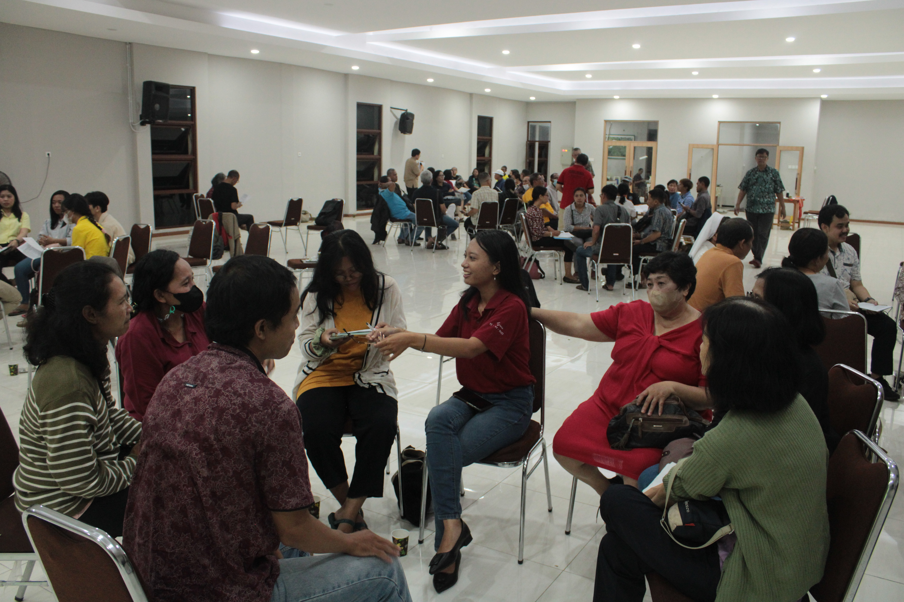

Tentang Paroki BSB
Semua Seputar Gereja BSB
Sejarah Paroki
dapat dilihat dengan menekan gambar gereja dibawah ini:
Paroki BSB menggunakan nama pelindung Santo Petrus Krisologus yang diambil dari nama Baptis Romo Petrus Krisologus Soetopanitro, SJ. Beliau adalah seorang Imam yang pertama kali menabur benih iman di kawasan Bukit Semarang Baru.
Proses Pembangunan
Dapat dilihat dengan menekan gambar dibawah ini:

Proses pembangunan Gereja ini memakan waktu yang cukup lama, kurang lebih 8 tahun. Peletakan batu pertama dilaksanakan pada tanggal 30 November 2008. Kemudian pembangunan selesai dan diberkati pada tanggal 30 Juli 2016.
Pelayanan dan Kegiatan
Dapat dilihat dengan menekan gambar dibawah ini:
Tata penggembalaan Gereja Santo Petrus Krisologus memiliki 5 wilayah, yaitu Boja, Kedungpane, Mijen, dan 2 wilayah Ngaliyan. 5 wilayah tersebut terdiri atas 29 lingkungan dengan 1.071 Kepala Keluarga atau 3.610 jiwa. dan gambar diatas adalah salah satu kegiatan yang ada di gereja bsb yakni kegiatan dalam rangka FIBB